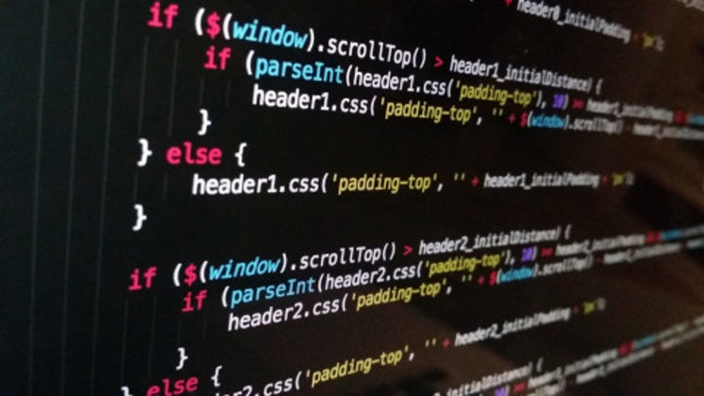

How Does The History Of JavaScript Begin?
JavaScript is born from a browser that currently does not exist: NetScape. In 1995, Netscape realized that when you had an HTML document, you couldn't interact with what the user was doing. In other words, the only thing the browser could do was wait to receive some data and then send it, as a form. In addition, it could give you certain design aspects, such as height and width, but with very little versatility.
Creator Of JavaScript
Brendan Eich created JavaScript for NetScape. This programming language gives many more possibilities to browsers. With JavaScript we can, for example, create controls in the search for content so that it only returns results with content, not empty text.
How is Brendan Eich?
Brendan Eich received his BA in mathematics and computer science from Santa Clara University. He received his master's degree in 1986 from the University of Illinois at Urbana-Champaign. Eich began his career at Silicon Graphics, working for seven years on operating system and network code.
Browsers As Important Participants
Browsers can also be a source of change in web development. In 2009, not only Google Chrome is born, but also the JavaScript engine V8, which acts as its interpreter, is born. In the same year, Ryan Dahl realized he could isolate Chrome's V8 engine and used it to create NodeJS, separating the technology from the browser. With this, he made JavaScript a cross-platform programming language. This means that it can now be used on Windows, Unix, Linux and other operating systems.
In recent years, we've seen JavaScript continue to grow. In 2012, Windows 8 introduced JavaScript as its native language, and in 2014, the standard for this programming language, known as ES6 or ES2015, was established.